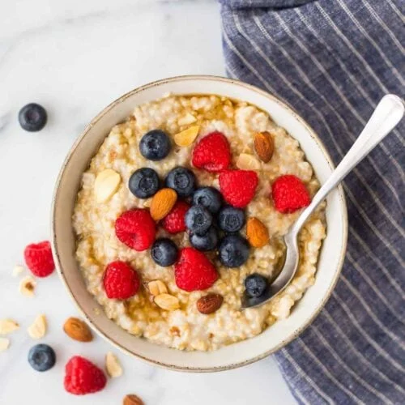
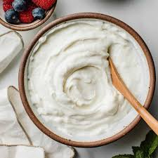
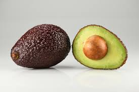
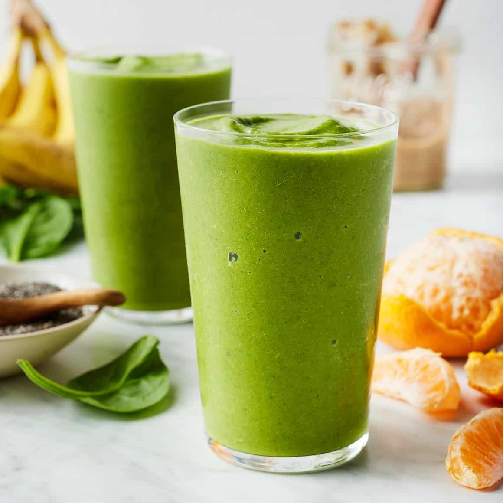

Day 1: Oatmeal with Fresh Berries
Oatmeal topped with a mix of fresh strawberries, blueberries, sliced almonds, and a drizzle of honey. Rich in fiber and antioxidants.
- Prep Time: 5 minutes
- Cook Time: 10 minutes
- Calories: 300 kcal

Day 2: Greek Yogurt with Almonds and Honey
Thick Greek yogurt served with sliced almonds, a drizzle of honey, and a sprinkle of cinnamon. High in protein and healthy fats.
- Prep Time: 5 minutes
- Calories: 250 kcal

Day 3: Avocado Toast with Poached Egg
Whole grain toast topped with mashed avocado, a perfectly poached egg, and a dash of black pepper. Packed with healthy fats and protein.
- Prep Time: 10 minutes
- Cook Time: 5 minutes
- Calories: 350 kcal

Day 4: Green Smoothie
A refreshing green smoothie made with spinach, kale, banana, and almond milk. Packed with vitamins and minerals.
- Prep Time: 5 minutes
- Calories: 200 kcal